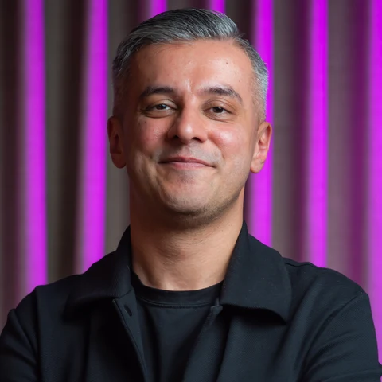

A global community of chief executives
YPO connects leaders of companies that meet significant scale thresholds — peer learning at the very top, by invitation only.
Raj is a long-standing member of EO (Entrepreneurs' Organization), one of the most selective global peer networks for business leaders. Inside this community, he doesn't just participate — he leads and shapes the agenda.
Steering programming, membership growth and peer learning across one of Southeast Asia's most active entrepreneurial chapters.
Appointed as Regional Expert for Marketing and Communications, advising chapters on brand and communications strategy at a pan-regional level.
Delivered across EO and YPO chapters from Dubai and India to Tanzania — translating frontier AI insights into immediate business value for peer CEOs.
YPO (Young Presidents' Organization) is a global leadership community of more than 30,000 chief executives across 150+ countries. Alongside his EO leadership, Raj is a regular keynote speaker and AI workshop facilitator for YPO chapters and forums — bringing frontier AI strategy into rooms full of presidents and CEOs.
YPO connects leaders of companies that meet significant scale thresholds — peer learning at the very top, by invitation only.
Raj translates the AI-First Mindset® into board-ready strategy for YPO forums — from emerging tech to operational redesign and AI adoption.
His YPO work sits alongside his EO chapters — together, 150+ workshops and keynotes delivered to peer CEOs worldwide.
EO doesn't hand out titles. It requires substantial revenue thresholds and peer nomination. Raj's leadership inside these networks signals the kind of peer trust that's hard to manufacture and impossible to fake.
Fellow CEOs and founders elected Raj to lead — not a credential you can buy.
Dual chapter membership and cross-chapter speaking translate into warm introductions across Asia, the Middle East, Africa and Europe.
Having led and built chapter programmes, Raj brings genuine operational knowledge of what growing businesses actually need.
EO & YPO speaking enquiries welcome.
Book Raj for your chapter →